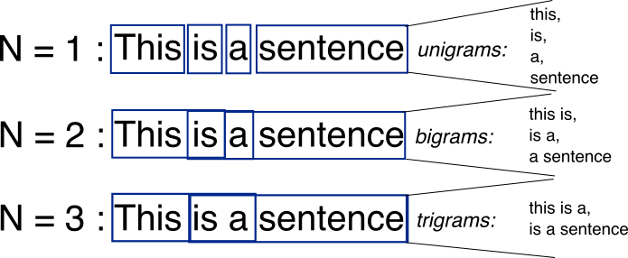
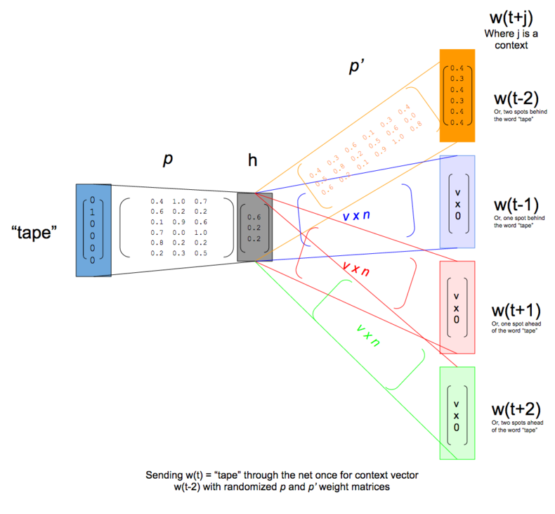
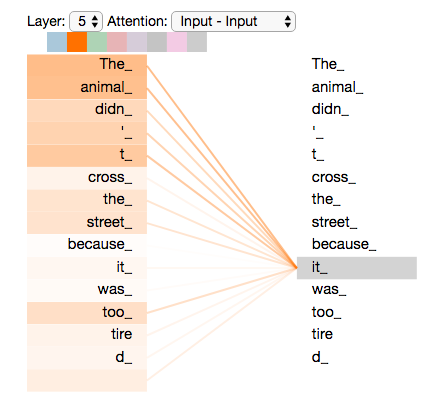
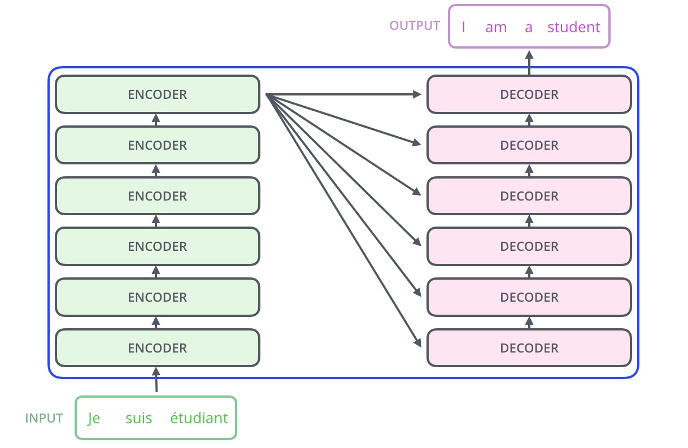
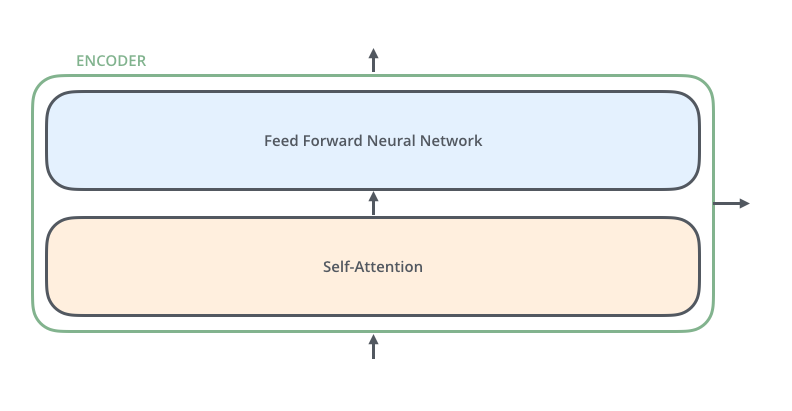
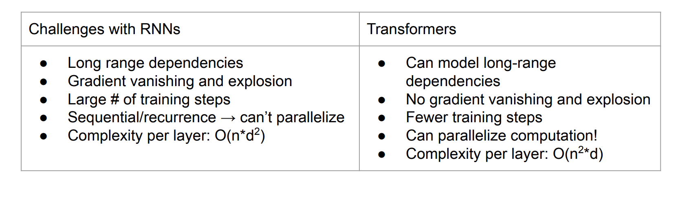

Start
Microcredencial Algoritmos verdes para la IA: diseño e implementación
Fundamentals of NLP
Tema: Natural language processing · Sesión 1 · Ponente: Olga Zamaraeva
Welcome, everyone. This is Session 1 of the microcredential on green algorithms for AI: "Fundamentals of NLP." I'm Olga Zamaraeva; I'll teach this session and the next two.
First, a disclaimer: I taught this module last year too, and it did not go well, in my opinion — it was super technical and boring for everyone. It's important to study model architectures and the underlying math, what makes one architecture more computationally and environmentally expensive than another, but I don't think that's the best focus for this course. So this year I changed everything, which means I'm doing this material for the first time today, which can be a little embarrassing. I'll even use a prompter on my iPad to help me explain things properly and not forget something important. Just a disclaimer.
How this session works
One page: explanations, interactive panels, code
- This page is the whole session. Open it on your laptop or phone, now or later:
olzama.github.io/teaching/GreenAI
- Interactive screens are animations you can step through, change and replay.
- Try it screens have Python that runs in your browser. Nothing to install.
- The longer notebooks run in Google Colab.
olga.zamaraeva@udc.es · UDC Teams · CITIC, 2nd floor
A note on how this session works. This year there are no slides. We use one web page for the whole session. You see it on the screen, and you can open the same page on your laptop or phone.
The address is on the screen: olzama.github.io, teaching, GreenAI. You can follow along during the session and come back to the page later.
Some screens are explanations, like slides. Some are interactive: animations you can step through, change, and replay, with real numbers. Some are exercises: Python code that runs in your browser. Nothing to install. The longer notebooks run in Google Colab.
My contact details are at the bottom of the screen.
NLP and what it costs
Natural Language Processing & Computational Linguistics
- NLP: building systems that do things with language
- CL: using computation to study language
These terms are sometimes used interchangeably, and sometimes to denote two related but distinct fields, which can be confusing. Originally, Computational Linguistics uses computers as a tool to study language scientifically — syntax, semantics, how languages differ typologically. The object of study is language as a natural phenomenon, something people do. Natural Language Processing used to be an engineering discipline: building systems that do something useful with language — translate it, summarize it, answer questions about it. Recently NLP has become very close to AI, which is why this module exists in this course. AI used to ask questions like "how similar is a model's performance to some measured human capacity, and how do we close the gap." Now, thanks to this merge with NLP, AI got good enough at so many tasks that the field shifted to questions like "how do we tell AI apart from a person" or "how should people work with AI." Question for you: is it easy to tell if you're talking to AI or a person? Is it easy to tell if you're reading AI-generated text? What if it's a Galician text?
One engine now runs many tasks
Before: separate models, one per task
Now: one model, prompted
This is where “NLP” and “AI” blur.
Radford et al., “Language Models are Unsupervised Multitask Learners,” 2019; Brown et al., “Language Models are Few-Shot Learners,” NeurIPS 2020
Until recently, "NLP" meant a separate, purpose-built model for each task: one system for translation, a different one for summarization, another for classifying sentiment. What changed is this: a single model, trained on nothing more sophisticated than "predict the next word of text" — the definition of a language model — turned out to be able to do all of these tasks. You just phrase your request differently to the same model, which is what "prompting" means. OpenAI showed this could work in 2019 with GPT-2; the real scale came in 2020 with GPT-3. This is the moment the public conversation stopped distinguishing "NLP" from "AI" — a general-purpose language model looks, from the outside, like general intelligence.
Where the costs come from
A language model uses electricity, hardware and water for its whole life
- Building the hardware has a cost too, before any of this runs.
So NLP today means large language models. What does a language model cost? There are four places where the cost comes from.
First, training. Training means computing the model's parameters from a large amount of text. For a large model this uses many processors for days or weeks. This cost is paid once for each model.
Second, inference. Inference means using the trained model: you send a request, and the model computes an answer. One request costs little. But it is paid for every request, by every user, for as long as the model is in use.
Third, storage. The model's parameters and the data have to be kept somewhere: on disks, and in the memory of the machines that run the model. That hardware uses electricity all the time, also when nobody is asking anything.
Fourth, cooling and water. Processors turn electricity into heat. A data center has to remove that heat. Many data centers do it by evaporating water. So a data center uses water as well as electricity.
And one more: the hardware itself has to be built, and building it also has a cost. We will come back to this when we talk about measurement.
Training once, inference every time
(once)
model
- Over a model's life, the cost of all its requests can add up to more than the cost of training it.
- Generating text costs more than classifying it: the model runs once for every word it writes.
- One request runs on more than the processor that computes it: the host machine, idle spare machines, and the data center around them.
Training is paid once. Inference is paid every time. A popular model may answer millions of requests a day, for months or years. So over the life of a model, the cost of all its requests can add up to more than the cost of training it.
The cost of a request depends on the task. If the model only has to pick an answer from a few options, for example to classify a review as positive or negative, it runs once. If it has to write text, it writes one word at a time, and it runs once for every word. So a long answer costs more than a short one.
And a request does not only use the processor that computes the answer. It also uses the machine around that processor, spare machines that wait for the next request, and the data center: cooling, power supply, and so on. When we measure, we have to decide which of these we count. The next screens show why that matters.
How do we measure it?
Computation, power and energy
An example: one hour on the GPU you will use in Colab
- FLOPs (floating-point operations): how much computation. They count the work, whatever the hardware.
- Power, in watts (W): how fast a device uses electricity, at a given moment.
- Energy, in watt-hours (Wh) or kilowatt-hours (kWh): power × time. This is what you pay for.
An NVIDIA T4 GPU
A real run draws less than the maximum, so 0.07 kWh is an upper bound for the GPU alone.
To compare costs, we need units. Let's go through them with one simple example.
First, FLOPs: floating-point operations. One FLOP is one multiplication or one addition of two numbers. FLOPs count how much computation a model does. They do not depend on the hardware. The same model, on the same input, needs the same number of FLOPs on any computer.
But FLOPs are not electricity. How much electricity the computation uses depends on the hardware that runs it. For electricity there are two units, and people mix them up.
Power is measured in watts. Power says how fast a device uses electricity at a given moment. Energy is power times time. It is measured in watt-hours, or in kilowatt-hours: one kilowatt-hour is a thousand watt-hours. Energy is what appears on an electricity bill.
The example on the right is the GPU you will use in Colab today, an NVIDIA T4. Its maximum power is 70 watts. If it runs at maximum power for one hour, it uses 70 watt-hours. That is 0.07 kilowatt-hours. A real run usually draws less than the maximum, so this is an upper bound, and it is only the GPU, not the rest of the machine.
From energy to carbon and water
The same hour on the T4, with example values
- PUE (Power Usage Effectiveness): the data center's total energy ÷ the computers' energy. 1.0 would mean no overhead.
- Carbon intensity: grams of CO₂eq per kWh of electricity. It depends on where and when: the grid's mix of coal, gas, wind, sun.
- CO₂eq: all greenhouse gases, converted to the amount of CO₂ with the same effect.
- WUE (Water Usage Effectiveness): liters of water per kWh used by the computers.
- Operational carbon comes from running the hardware; embodied carbon, from building it.
Example values. Real ones depend on the data center and the grid.
Notebook 1 measures with CodeCarbon: it tracks the power of the processor, GPU and memory while your code runs, and multiplies the energy by your region's carbon intensity.
Energy is not yet carbon. We need a few more steps, and each step has its own unit.
First, PUE, power usage effectiveness. A data center uses energy for more than the computers: for cooling, for lighting, for converting power. PUE is the total energy of the data center divided by the energy of the computers. A PUE of 1.0 would mean no overhead at all. With a PUE of 1.1, our 0.07 kilowatt-hours become about 0.077.
Second, carbon intensity. This says how many grams of CO2-equivalent are emitted to produce one kilowatt-hour of electricity. It depends on where the electricity comes from: coal, gas, wind, sun, nuclear. So it changes from country to country, and also from hour to hour. With an example value of 200 grams per kilowatt-hour, our hour on the GPU emits about 15 grams.
CO2-equivalent means that other greenhouse gases, like methane, are counted too. Each is converted into the amount of CO2 that would have the same effect on the climate.
Third, water. WUE, water usage effectiveness, is the number of liters of water a data center uses for each kilowatt-hour that its computers use. WUE is applied to the computers' energy, before PUE. With 1.15 liters per kilowatt-hour, our hour uses about 0.08 liters, a small glass of water.
All of this is operational carbon: it comes from running the hardware. Embodied carbon comes from building the hardware: making the chips, the servers, the building. It is real, but harder to measure, and most reports leave it out.
These are example values, to show the steps. In Notebook 1 you will measure with a tool called CodeCarbon. It tracks the power of the processor, the GPU and the memory while your code runs. It adds this up to energy, and it multiplies the energy by the carbon intensity of your region.
A real measurement: one prompt
The median Gemini text prompt, May 2025, as measured by Google
| What is counted | Wh |
|---|---|
| AI accelerators, while computing | 0.14 |
| host processor and memory | 0.06 |
| idle machines, kept ready | 0.02 |
| data center overhead (PUE 1.09) | 0.02 |
| total | 0.24 |
- What you count changes the number.
- Carbon: all the energy × the grid's carbon intensity, plus a share of building the hardware. Water: the computers' energy × WUE.
- Measured by the company that runs the model, for its own system. Not independently checked.
Source: Elsworth et al., “Measuring the environmental impact of delivering AI at Google Scale,” 2025 (arXiv:2508.15734)
Here is a real measurement of inference, from a paper published in August 2025 by Google. It measures one text prompt to Gemini, Google's chatbot: the median prompt, in May 2025.
The table shows what they counted. The AI accelerators, the chips that compute the answer, use 0.14 watt-hours. The host machine around them, its processor and memory, adds 0.06. Machines that sit idle, ready for the next requests, add 0.02. And the data center overhead adds 0.02 more. Their PUE is 1.09. The total is 0.24 watt-hours.
Look at the first row and the last row. If you count only the accelerators, you get a little over half of the total. So two honest measurements of the same prompt can differ by almost a factor of two, just because they count different things. When you read a number like this, always ask what was counted.
The board on the right does the arithmetic step by step. First the sum: the four rows add up to 0.24 watt-hours. Then the share: 0.14 out of 0.24 is about 0.58, a little over half.
Then carbon, with the steps from the last screen. 0.24 watt-hours is 0.00024 kilowatt-hours. Google multiplies it by 94 grams of CO2-equivalent per kilowatt-hour. That is not the carbon intensity of the grid itself, which averaged 345: Google subtracts the clean energy it buys, and this is called a market-based number. The kilowatt-hours cancel, and we get about 0.023 grams. To that they add 0.010 grams, the prompt's share of the carbon from building the chips and the machines around them. Together, about 0.03 grams.
Last, water. As on the last screen, WUE is applied to the computers' energy, without the data center overhead: 0.24 minus 0.02 is 0.22 watt-hours, or 0.00022 kilowatt-hours. Times 1.15 liters per kilowatt-hour gives about 0.25 milliliters, about five drops. The paper reports 0.26, because it starts from the unrounded values.
One more thing: this measurement is by the company that runs the model, for its own system. It has not been checked independently. It is still one of the most complete measurements published so far.
What this course covers
The goal: to talk about modern LLMs, and what they cost
Three topics, one running project: the Green NLP Benchmark Lab
- To understand large language models, we need to understand language models in general, and how NLP got to them
Language models
Quantized language models
Retrieval-augmented generation
- Topic 2: the same model, with fewer bits for each of its numbers
- Topic 3: not a kind of model, but a way of using one: give it only the relevant pieces of the documents
- Every topic: the same tasks, measured the same way. One row per run in your own leaderboard.
Now, what this course covers. The goal is that you can talk about modern large language models, and about what they cost, with understanding.
To understand large language models, we first need to understand language models in general. And for that, it helps to see how NLP got to them. So today we go through a short history of language models, from the simplest one to the transformer.
The course has three topics. Topic 1, which we start today: language models. Topic 2: quantized language models. That is the same model, but each of its numbers is stored and computed with fewer bits. Topic 3: retrieval-augmented generation. This is not a kind of model. It is a way of using a model: instead of giving the model everything, we first retrieve the relevant pieces of the documents, and give the model only those.
For every topic we run the same tasks and measure them the same way. Every run adds one row to a leaderboard, a file you keep for the whole course. By the end, you have your own comparison.
Two tasks: question answering and translation
Question answering
- Answer questions about a small set of documents
- Easy to evaluate: an answer is right or wrong, so the score is the share of right answers
- The main task for measurement, in all three sessions
Machine translation
- Harder to evaluate: a sentence has many good translations
- Our example, Galician to English. Galician is a low-resource language: there is much less text for it than for Spanish or English.
Unha tía miña, que todo o solucionaba con ditos e refráns, dicía algo así como “un é escravo do que di e dono do que cala”
from the novel Speechwriter by Paulo Naseiro
In the hands-on parts we work with two classic NLP tasks.
The first is question answering. The model gets a small set of documents and a question, and it answers. This task is easy to evaluate: each answer is right or wrong, so the score is simply the share of right answers. That is why it is our main task for measurement, in all three sessions.
The second is machine translation. It is harder to evaluate, because one sentence has many good translations. But it shows very well how language models work. Attention, which we will see today, was invented for translation.
Our example is this sentence, from the novel Speechwriter by Paulo Naseiro. It is in Galician. Galician is a low-resource language: there is much less text in Galician than in Spanish or English, and so much less data to learn from. We will come back to the two highlighted words, tía miña, many times today.
From n-grams to transformers
Each step fixes a problem of the step before.
| Step | What it adds | What is still missing |
|---|---|---|
| 1 N-grams (statistical, 1990s) | predict the next word by counting | a word pair it never counted gets probability 0, even if a similar pair was counted |
| 2 Embeddings (neural, 2013) | a learned vector per word: similar words get similar vectors | vectors for words, not for sentences |
| 3 Encoder–decoder (2014) | read a sentence into one vector, write the translation from it | one vector for a whole sentence: early words fade |
| 4 Attention (2015) | the decoder looks back at every source word | the source is still read one word after another |
| 5 Self-attention (2017) | every word looks at every word of its own sentence, all at once | one round of looking |
| 6 Transformers (2017–today) | many blocks of self-attention, stacked: today's LLMs | cost grows with size and length |
Before statistics, NLP systems were written by hand, as rules. Each step since has replaced hand-written knowledge with more data and more computation.
Here is the plan for the technical part of today. We go in six steps. Each step fixes a problem of the step before. The bar at the bottom of the screen shows which step we are on.
Before these steps, NLP systems were written by hand, as rules. Each step since then has replaced hand-written knowledge with more data and more computation. That is why the history matters for a course about costs.
Step 1 is n-grams. An n-gram model predicts the next word by counting which words follow which. Its problem: it only knows what it has counted. If it has seen “my aunt spoke” but never “my uncle spoke”, it gives “spoke” after uncle a probability of 0. What it counted for aunt does not carry over to uncle, a word used in the same places.
Step 2 is embeddings. Each word gets a vector, a list of values, learned from the words around it. Similar words get similar vectors. But these are vectors for single words. They say nothing about a sentence.
Step 3 is the encoder–decoder model for translation. The encoder reads the whole sentence into one vector. The decoder writes the translation from that vector. Its problem: one vector has to hold the whole sentence, and the early words fade.
Step 4 is attention. The decoder may look back at every source word, and it decides how much to use each one. But the source sentence is still read one word after another.
Step 5 is self-attention. Every word looks at every other word of its own sentence, all at the same time.
Step 6 is the transformer: many blocks of self-attention stacked on top of each other. This is the architecture of today's large language models. Its cost grows with the size of the model and the length of the text. That is where the rest of the course starts.
Step 1 · N-grams
What is a language model?
- It predicts the next word.
- It gives a probability to every word in the vocabulary. The probabilities add up to 1.
- An n-gram model is the simplest kind: it counts word sequences in a corpus, then divides.

Credit: Jurafsky & Martin, Speech and Language ProcessingAfter “my”: one probability per word
Counted from three sentences, on the next screen. The vocabulary has 7 words.
Let's step back and give some definitions. We said there were various epochs in NLP; we'll skip the symbolic era for now, though it's important — maybe we'll cover it in Session 3 when we talk about retrieval-augmented generation. So we start with the statistical era, directly with "language models." Language models were the step from task-specific to general AI. Formally: a language model assigns a probability to sequences of words, and in practice is almost always used to predict the next word given the words so far — not just a single guess, but a full probability distribution over the entire vocabulary, where every word gets some probability, even if tiny. This is the task underlying everything from the 1990s n-gram counting we're about to do by hand, to GPT-3. N-grams are the simplest possible instance of this idea: instead of anything learned or neural, just count how often word sequences occur in real text, and turn counts into probabilities.
Count, then divide
- This is a bigram model: the next word depends on the one word before it.
- Counting, then dividing: that is the whole model.
- A pair it never counted gets probability 0. Aunt and uncle appear in the same places, but the model keeps separate counts for each word: what it learns about aunt does not help with uncle.
- A Galician model has far fewer sentences to count from than a Spanish or English one, so more of its pairs are never counted.
An n-gram is just a sequence of n consecutive words — a bigram is 2 words, a trigram is 3, and so on. This is a bigram model: it estimates the probability of the next word using only the one preceding word.
Our toy corpus stays with the story's cast of characters. The formula on screen is nothing more than: out of all the times "my" appeared, what fraction of the time was it immediately followed by "aunt"? "My" appears 3 times total; "my aunt" appears 2 of those times, so P(aunt|my) = 2/3 ≈ 0.67. "My uncle" appears once, so P(uncle|my) = 1/3 ≈ 0.33. Counting, then dividing — that really is the entire model, there's no hidden step.
Question for you: is it better to use a bigger n? Using a longer n gives the model more context to condition on, but the exact sequence it needs to have seen becomes rarer and rarer in any real corpus — more context helps in principle but makes the sparsity problem worse in practice. And this is the thread we keep pulling: a Galician n-gram model has dramatically fewer real sentences to count from than a Spanish or English one does — every count in this toy example stands in for a much bigger, real problem. Sparse data means noisy, unreliable probability estimates.
Count, generate, score
Count, then divide. Press Replay counting. A window slides over the three sentences and fills the count table, one pair at a time. Click the row for “my”. The page divides: aunt gets 0.67, uncle gets 0.33. These are the numbers from the last screen.
Now choose Edit the corpus. Add the sentence “my uncle spoke kindly”. Press Use this corpus. Click “my” again. Aunt and uncle now get half each.
Then move the smoothing slider. Smoothing adds a small count k to every pair, so some probability moves to pairs the corpus never saw.
Press the tab Generate text. Pick a start word and press Generate, first with Greedy, then with Sample. Greedy always takes the most frequent next word. Sample draws a word using the probabilities.
Press the tab Score a sentence. Type “her aunt stayed quiet”. The corpus never saw “her”, so one factor is 0, and the whole sentence gets probability 0. This is the sparsity problem again.
Build the bigram model
Some lines have gaps marked ___. Replace each gap with code. Run shows what your code prints. Run the tests also checks it: each test checks one thing, including unusual inputs, and says what to fix. Under each exercise you can read the tests, the hints and the solution. Do the exercises in order: later ones use your earlier code.
Exercise 1 · Count bigrams, then divide
Complete build_bigram_counts and bigram_prob. counts[w1][w2] is how many times the pair w1 w2 occurs. unigram_counts[w1] is how many pairs start with w1. bigram_prob returns P(w2 | w1) = count(w1 w2) / count(w1). The cell should print 0.67 and 0.33.
Hints
- The inner loop looks at position
iand the word right after it,words[i + 1]. - The pair count is indexed by the first word, then the second word.
- The probability divides the pair count by the count of the first word.
Exercise 2 · Change the data, change the model
Add at least two sentences to EXTENDED_CORPUS so that, in the new model, P(uncle | my) is larger than P(aunt | my).
Hints
- The original corpus has “my aunt” twice and “my uncle” once.
- Each new sentence is a Python string, for example
"my uncle spoke kindly".
Now everyone works alone, for about 15 minutes. There are three screens of exercises: this one and the next two.
The code runs in the browser. Nothing to install. The first Run loads Python and takes a few seconds.
How it works: replace every gap, the three underscores, with code. Run shows what the code prints. Run the tests checks it. Each test checks one thing, also with unusual inputs like an empty corpus, and a failing test says what to fix. The tests, the hints and the solution are under each exercise. Ask them to read a failing test's message before they open the solution.
Exercise 1 rebuilds the model from the worked example. It should print 0.67 and 0.33. Exercise 2 changes the corpus, so the numbers change: the data is the model.
Generate text with the model
Exercise 3 · Generate text greedily
Given a start word, the model repeatedly picks the next word with the highest count. Complete the loop in generate: pick that word, and add it to the sentence.
Hints
candidatesmaps each possible next word to its count, for example{'aunt': 2, 'uncle': 1}.max(candidates, key=...)returns the key with the largest value ofkey(word).
generate("her", counts, unigram_counts) and run it. Why does the model stop at once? There is far less Galician text online than Spanish or English text. What would you predict about an n-gram model trained on Galician?Exercise 3 makes the model write. Start from a word. Look at the words that followed it in the corpus. Take the most frequent one. Repeat.
From “my” it writes “my aunt stayed quiet”. From “her” it writes nothing more. The corpus never saw “her”, so there is no row to look up.
The question at the bottom links this to Galician. Less text means more words and pairs the model has never seen. So it gets stuck more often.
Use the model to fix word order
A word-for-word translator turns Galician “unha tía miña” into “a aunt my”: the right words in the wrong order. A bigram model can score each possible order by how fluent it sounds, and keep the best one.
Exercise 4 · Score word orders with a smoothed bigram model
Two gaps. In sentence_log_prob, compute the add-one smoothed probability of each pair and add its logarithm to log_prob. In the search loop, keep the best-scoring order seen so far.
Hints
- Add-one smoothing adds 1 to every pair count, and adds the vocabulary size to the denominator.
- Logs turn the product of probabilities into a sum:
log_prob += math.log(prob). - Update the best order only when the new score is higher than
best_score.
Exercise 5 · Count the orderings
There are two ways to get the number of orderings of the 8 words in BIGGER_WORDS, and they must give the same number:
- Count them. The loop goes through every ordering, one at a time. Fill in the list to order, and add 1 to
countfor each ordering. - Compute them. Set
expectedwith the formula for the number of orderings of n different words.
The last lines print both numbers, one under the other, and say whether they match.
Hints
- n different words have n! orderings: n × (n − 1) × … × 1.
mathwas imported in Exercise 4.
Part B uses the model for translation. A word-for-word translator gives “a aunt my”. The right words, in the wrong order.
Exercise 4 tries every order of the three words. The bigram model scores each one. The best score wins. The best order is “a my aunt”. Better, still wrong. The model only knows which words sit next to each other. It knows no grammar.
Exercise 5 counts the orders. 3 words have 6. 8 words have 40,320. A 20-word sentence has about 2.4 billion billion. Nobody can try them all. A translation system has to decide where each word goes in a smarter way. That is what attention will do, in step 4.
Shakespeare, one word at a time
The same counting, on the complete works of Shakespeare: about a million words.
Press Write new lines. There are four models. The unigram model looks at no context. The bigram model looks at one word, the trigram model at two, the 4-gram model at three. The longer the context, the more it sounds like Shakespeare.
Click a word to see the choices the model had at that step. The 4-gram model often has only one choice. A long context was usually seen once, so the model copies Shakespeare word for word. This is sparsity again, from the other side.
Then press the tab Shakespeare or n-gram. One line is real, one comes from the model. Let the class vote.
N-grams at scale
Notebook 01b, in Colab (CPU only, no GPU needed)
- The same counting, on 2 million words each of Galician and Spanish Wikipedia
- How many bigrams of new text has the model never seen, as the training text grows?
- What does a longer n do? And a Galician trigram model writes text
Now the same counting on real text. Open Notebook 01b in Colab. It needs no GPU.
The notebook downloads 2 million words of Galician Wikipedia and 2 million of Spanish. It trains bigram models on more and more text, from 10 thousand words to 1.8 million. For each model it measures how many bigrams of new text the model has never seen. Those bigrams get probability 0.
Then it repeats the count for longer n-grams, up to 4 words. And at the end a trigram model writes Galician.
Look at two things. First: at the same amount of text, are Galician and Spanish very different? Second: how much text does each language have? The notebook gives the totals for all of Wikipedia.
Step 2 · Embeddings
Comparing vectors: cosine similarity
How similar are the directions of two vectors? The formula, derived on the board.
Back to the problem from “Count, then divide”: the n-gram counts for aunt say nothing about uncle, although the two words are used in the same way. Step 2 gives each word a vector, so that words used in similar ways can get similar vectors. Whatever the vectors hold, we need a number that says how similar two of them are. I will derive it on the board, step by step. Each press draws the next part of an equation: one term, one factor, or one summand.
Two words, as vectors with two values: aunt is 4, 2, and uncle is 3, 3. We draw each one as an arrow from the origin. Words used in similar ways should point in similar directions. So we want to measure how similar the directions are.
Each arrow has a length. By Pythagoras, the length of aunt is the square root of 4 squared, the horizontal side, plus 2 squared, the vertical side: the square root of 16 plus 4, which is the square root of 20, about 4.47. Uncle has length square root of 9 plus 9, the square root of 18, about 4.24. Length is not direction, so we remove it.
To remove the length, divide each vector by its own length. We call the results a-hat and u-hat. They point in the same directions as before, but both have length 1. So they end on the circle of radius 1. For aunt, that is 4 divided by 4.47 and 2 divided by 4.47: about 0.89 and 0.45. For uncle, 3 divided by 4.24, twice: about 0.71 and 0.71.
A point on the circle of radius 1, at angle alpha from the x-axis, has coordinates cos alpha, sin alpha. You can see it on the drawing: the dashed lines go down to cos alpha and across to sin alpha. So a-hat is cos alpha, sin alpha, and u-hat is cos beta, sin beta.
Multiply the matching entries and add them up: the first entries, cos alpha times cos beta, plus the second entries, sin alpha times sin beta. This is called the dot product.
Trigonometry says this sum is exactly the cosine of beta minus alpha. And beta minus alpha is the angle between the two arrows, theta. So the dot product of the two short arrows is the cosine of the angle between them.
Now put it together. The short arrows were the vectors divided by their lengths. So the cosine of theta is the dot product of the original vectors, divided by both lengths. That is the formula for cosine similarity.
With our numbers: 4 times 3 is 12, and 2 times 3 is 6. Together 18. Below, 4.47 times 4.24 is about 18.95. The result is about 0.95, close to 1, the maximum. 1 means the same direction, and 0 a right angle.
Shakespeare, counted by play
Here is a first way to get vectors: by counting. The table counts four words, battle, soldier, fool and clown, in four plays.
Choose Plays as vectors: each play is a column of counts, so each play is a vector. The plot draws two of the dimensions. Now choose Words as vectors: each row is a vector too.
In the similarity table, click a cell. The page shows the cosine arithmetic for that pair. Switch between cosine and dot product: the dot product grows with frequency, the cosine does not.
Count it adds a word of your own, counted in the full text of the plays.
From words to vectors: embeddings
Why vectors of counts are not enough: they are long, mostly 0, and similar words do not line up
The previous screen turned counts into vectors. Here is what goes wrong with vectors of counts, and what replaces them.
Our three sentences again. For each word we count how often every word of the vocabulary stands right before or right after it. The vocabulary has seven words, so the vector has seven entries. Aunt: “my” twice, “stayed” once, “spoke” once, and 0 for the rest. Uncle: “my” once, “stayed” once. Already in this tiny example, most entries are 0.
Now real text: 2 million words of Galician Wikipedia, the sample from Notebook 01b. It has 127,848 different words, so each vector has 127,848 entries. For tía, aunt, only 23 entries are not 0. The other 127,825 are 0. A vector that is mostly 0 is called sparse. Storing and comparing it means handling 127,848 numbers to use 23.
Worse, similar words do not line up. In Galician, “her aunt” or “his aunt” is “súa tía”, and “his uncle” is “seu tío”: súa goes with feminine words, seu with masculine ones. So the most frequent neighbour of tía and the most frequent neighbour of tío sit in two different columns. With so few counts, little else is shared. The cosine of tía and tío is about 0.05, almost unrelated, and lower than the cosine of tía and casa, house, at about 0.33.
This is what an embedding is for. An embedding of a word is a vector of a few hundred numbers, none of them 0: a dense vector, instead of 127,848 mostly empty entries. Its numbers are not counted; they are learned from text. The learning aims at one thing: words used in similar ways should get similar vectors. Then tía and tío, which are used in the same ways, should get a high cosine, even though their counts do not line up. The next screens show how the numbers are learned.
How embeddings are actually learned
Skip-gram (Mikolov et al., 2013): predict the neighbors
A tiny corpus
Window = 1
16 training pairs: input → word to predict
| cats → chase | cats → eat |
| chase → cats | eat → cats |
| chase → mice | eat → fish |
| mice → chase | fish → eat |
| dogs → chase | dogs → eat |
| chase → dogs | eat → dogs |
| chase → balls | eat → meat |
| balls → chase | meat → eat |
- The task: given cats, give high probability to chase and eat
- The task never mentions word vectors. The vectors appear because the model needs them to make predictions.
The previous screen said embeddings are learned. This screen and the next one set up how, with a tiny example. Then we watch it on the skip-gram page.
The method is called skip-gram. It was introduced by Mikolov and colleagues in 2013.
Skip-gram is trained to do one thing. It is given a word. It must predict which words appear next to that word.
On the left is a tiny corpus. A corpus is a collection of text. This one has four sentences: cats chase mice, dogs chase balls, cats eat fish, dogs eat meat.
We use a window of size 1. This means each word predicts only the word directly before it and the word directly after it. The picture shows this for the word "chase" in the first sentence. "Chase" must predict "cats" and "mice".
We do this for every word in every sentence. The result is the list on the right. There are 16 training pairs. Each pair is an input word and one word the model should predict. For example, the first pair says: given "cats", predict "chase".
So the task is: given "cats", give high probability to "chase" and to "eat". Given "dogs", also give high probability to "chase" and to "eat".
Notice that the task says nothing about word vectors. Nobody asks the model to find good representations of words. The vectors appear because the model needs some numbers for each word in order to make its predictions. The next screen shows where those numbers live, and what the model multiplies.
Skip-gram: two pictures of the same model
The classic picture (Mikolov et al., 2013)
The same model, with numbers

Illustration: district-data-labs (Medium)- Input w(t) = “tape”, as a one-hot vector. Projection = its row of p, called h: the word's embedding.
- Output = h × p′: one score per word, with the same p′ for every position. The picture stops at the scores; softmax, on the next screens, turns them into probabilities.
Here are two pictures of skip-gram. On the left is the classic picture, from the paper by Mikolov and colleagues, 2013. The input is one word, w of t. It goes through a projection. The output is the words around it: two before, w of t minus 2 and t minus 1, and two after.
On the right is the same model with its numbers. The blue column is the input word, “tape”, as a one-hot vector: all zeros, and a 1 at the position of “tape”. The table p is the embedding table. Multiplying the one-hot vector by p picks out one row of p. That row is h, the projection. It is the word's embedding.
Then h is multiplied by the second table, p prime. This gives one score for every word in the vocabulary. The four colored outputs are the four positions in the window. In word2vec they all use the same table p prime. So the model makes one prediction, and that prediction is checked against each of the neighbors.
Look at the orange output column: 0.4, 0.3, and so on. These are scores. They do not add up to 1, so they are not probabilities yet. The picture leaves out the last step, softmax, which turns scores into probabilities. The next two screens go through all the steps, with our own small example.
Step by step, 1: from a word to its vector
Our corpus, with the tables at the start of training
Now the same steps with our own small example: the corpus about cats and dogs, and the tables at the very start of training, when they are still random. Each press shows the next step.
The input word is cats. The model cannot read a word, so it writes it as a one-hot vector. There is one position for every word in the vocabulary, eight here. All of them are 0, except a 1 at the word's own position. The board shows the one-hot vectors of all eight words, one row each; the input word cats uses the first row.
The table p is the embedding table. It has one row for every word, and each row has two values. At the start, these values are random.
Now multiply the one-hot vector by the table. Every row of p is multiplied by its own 0 or 1, and then the rows are added up. The rows multiplied by 0 disappear. Only the row of cats is left. So the result, h, is just the row of cats: minus 0.41 and minus 0.26. That is why the rows of p are the embeddings: reading a word means copying out its row.
Step by step, 2: from the vector to probabilities
The model's guess for the neighbor of cats, before any training
The second half: from h to a probability for every word.
The second table, p prime, has one column for every word. On the screen each column is shown as a row, so that it fits next to the word. Where does it come from? It is part of the model, like p: it does not come from the corpus. At the start its values are random, just like the values of p. Training changes both tables together. After training, word2vec keeps p as the embeddings and usually throws p prime away: it was only needed to make the predictions.
The score. For each word, multiply h by that word's column: first value times first value, second times second, and add them up. This is called a dot product. For chase it gives minus 0.074. Every word gets a score like this. Scores can be negative, and they do not add up to 1. So they are not probabilities yet.
Softmax turns scores into probabilities, in two parts. First, take e to the power of each score. e is a number, about 2.718. The result is always positive, and a higher score still gives a higher number. For chase, e to the minus 0.074 is 0.929.
Second, divide each of these numbers by their sum. The sum is 8.346. After the division, the eight numbers add up to exactly 1. Now they are probabilities. The probability of chase, given cats, is 0.929 divided by 8.346, which is 0.111. That is the softmax: e to the power, then divide by the sum.
The training pair says that chase is a true neighbor of cats. But the model gives chase only 0.111, and mice gets the most. So training changes the numbers a little: the row of cats in p, and the columns of p prime, so that chase gets a higher probability next time. The interactive panel on the next screen does exactly this, one pair at a time.
Skip-gram, step by step
The top panel shows the multiplication. Press Play the multiplication. Show the steps: the one-hot vector times p gives h. h times p prime gives eight scores. The scores become eight probabilities. Then choose all words at once: now all eight one-hot vectors are multiplied together, and we get a full table of predictions.
Now train. In the panel on the right, press Step: next pair. The first pair is cats to chase. The bar chart shows the model's guess for cats. Every word gets about one eighth. Chase gets 0.111, too low. In the plot, the green arrow adds a little of the vector for chase to cats. The red arrow subtracts a little of the average guess. The black arrow, their sum, is the step. Cats moves a little. Press Step a few more times. The list of the 16 training pairs ticks off each pair, and the multiplication at the top is redrawn for the pair just trained.
Then press One pass: it trains on the rest of the 16 pairs. Then press Play: it trains pass after pass, all 16 pairs every time, 30 passes per second. Every word is an input in every pass, so while Play runs, the multiplication at the top switches to all words at once: all eight one-hot rows times p, and each word's predictions next to what the corpus says. Pause, and it goes back to one pair. Watch the colors. The model never sees them. Cats and dogs end up pointing the same way. So do mice and balls, and fish and meat. Move the slider to 100 passes, then to 3000. Turn on paths and go back to 100 passes: about two thirds of the movement up to pass 100 happened in the first 20 passes. If there is time, press new random start and play again. The starting points change; the grouping comes back.
Similar company, similar vectors
The company each word keeps
| cats | chase, eat |
| dogs | chase, eat |
| mice | chase |
| balls | chase |
| fish | eat |
| meat | eat |
The table after training
| cats | 0.63 | 0.37 |
| dogs | 0.86 | 0.48 |
| mice | 3.89 | −3.15 |
| balls | 3.93 | −2.94 |
| fish | −0.34 | 5.00 |
| meat | −0.16 | 4.91 |
- Same neighbors → same nudges, pair after pair → same direction
- cos(cats, dogs) = 1.00 cos(cats, fish) = 0.44
- Task solved: P(chase | cats) 0.11 → 0.47, P(eat | cats) 0.12 → 0.52
“You shall know a word by the company it keeps.” J. R. Firth (1957)
Why did this happen? The left table shows the company each word keeps, meaning the words it has to predict. Cats has to predict chase and eat. Dogs has to predict exactly the same two words.
So every time training nudges the cats row to predict chase better, it later nudges the dogs row in the same way, for the same reason. Pair after pair, the two rows receive the same kind of changes. In the end they point in the same direction. The right table shows this. Cats is 0.63 and 0.37. Dogs is 0.86 and 0.48. Both have the second number a little more than half of the first. Dogs is only further from the origin. Mice and balls are almost identical, and so are fish and meat.
We can measure this with cosine similarity from a few screens ago. Cosine similarity measures direction and ignores length. Cosine of cats and dogs is 1.00, the maximum. Cosine of cats and fish is 0.44, much lower.
The model also got good at its actual task. Before training, the probability of chase given cats was 0.11. After training it is 0.47. The probability of eat given cats went from 0.12 to 0.52. Those two numbers add up to almost 1. The model has learned that cats is always followed by one of these two words, and it splits its bet equally between them.
The quote at the bottom is from the linguist J. R. Firth, 1957: "You shall know a word by the company it keeps." This is called the distributional idea: words that appear in similar contexts tend to have similar meanings. Skip-gram turns this idea into a training procedure. If two words keep similar company, the model does better when it gives them similar vectors.
Which words are similar?
The corpus grows with the same pattern as ours, up to 92 words. Choose 92 words and press Play.
There are three columns. Left: one-hot vectors. Every pair of words is at a right angle, so the cosine is 0. One-hot vectors have no similarity at all. Middle: trained vectors with as many dimensions as words. Right: trained vectors with 2 dimensions.
Watch the chart of the cosine of cats and dogs. With 2 dimensions it reaches 0.95 at pass 4. With 92 dimensions it takes 352 passes. With few dimensions, words have to share, so similarity appears much sooner.
What we keep: the embedding table
- After training, discard the prediction part and keep the table. Its rows are the word embeddings.
- Embeddings = the parameters the model uses to solve its prediction task
- Rare word → few pairs → few nudges → poorly placed vector
- Less Galician text online → weaker embeddings for many Galician words
The left side summarizes the whole story as a chain of causes. The task is to predict neighboring words. To do that, the model needs adjustable numbers for each word. Training adjusts those numbers, one pair at a time. Words with similar neighbors receive similar adjustments. The result is a space where similar words are close together.
When training is finished, we do not need the prediction part anymore. We keep only the table. Each row of the table is the embedding of one word. This is what people mean by word embeddings.
You will sometimes hear that embeddings are a byproduct of training. That is roughly right, but it can make them sound accidental. A more precise way to say it: embeddings are learned internal representations. They are exactly the parameters the model uses to solve its prediction task.
Now the resource problem from the n-gram screen comes back. A word gets nudged only when it appears in a training pair. A rare word appears in few pairs. So its vector gets few nudges and may stay close to where it started, which was random. There is less Galician text online than Spanish or English text. So many Galician words are rare in the training data, and their embeddings are weaker.
Remember the two tables from the page: p, one vector per word as an input, and p′, one vector per word as a predicted neighbor. We keep the first one.
Embeddings playground
Notebook 01c, in Colab (CPU only, no GPU needed)
- Part A: train skip-gram on 2 million words of Galician, with 2 to 300 dimensions: time, energy, quality
- Part B: train on less text: which words suffer first?
- Part C: does a multilingual model match Galician words with their Spanish and English translations?
Now you train skip-gram yourself, on real text. Open Notebook 01c in Colab. It needs no GPU; the training runs take about three minutes in all.
Part A trains skip-gram on 2 million words of Galician Wikipedia, five times: with 2, 10, 50, 100 and 300 dimensions. CodeCarbon measures each run. The quality test uses five groups of Galician words: months, days of the week, numbers, colors and family words. A good model puts each word near the other words of its group.
Part B trains on less text, from 100 thousand words up. Look at which group suffers first, and compare with how often its words occur. This is the claim from the last screen: rare words get poorly placed vectors.
Part C tests a multilingual model on Galician words. Most of them are spelled differently from Spanish. Look at which words it gets wrong.
Step 3 · Encoder–decoder translation
Machine translation: a very short history
1950s
1990s
attention, 2015
2020s
- One of AI's oldest goals: first public demo in 1954 (Georgetown–IBM)
- Each shift trades hand-written knowledge for more data and more compute
Source: Hutchins, “Machine Translation: A Concise History,” 2007
Just because I like MT so much. MT is one of AI's oldest stated goals — the first public demonstration was in 1954, the Georgetown–IBM experiment, translating a small set of Russian sentences into English (Russia being the enemy back then too, sadly, my own native country), received with enormous, and in hindsight unrealistic, optimism about how soon "solved" translation was. In 1966, the U.S. government's ALPAC report concluded MT wasn't living up to its promises and recommended cutting funding, setting back American MT research roughly a decade. Progress resumed with the rules era — bilingual dictionaries plus hand-written grammatical transformation rules, a linguist encoding "how do you convert this Russian sentence structure into an English one" — then the statistical era starting in the 1990s, learning translation patterns directly from large amounts of already-translated text, no hand-written grammar needed, Google Translate launched on this in 2006, then neural plus attention from 2015, and today's LLM-based translation.
Neural translation: an encoder and a decoder
- Every word is a vector, learned from translated examples, like skip-gram's embeddings
- Encoder: reads the Galician words in order into one vector, the summary
- Decoder: starts from the summary and writes English one word at a time; each word is chosen the way skip-gram chose neighbors
vector
Sutskever, Vinyals & Le, NeurIPS 2014 (arXiv:1409.3215)
This is the first neural translation design, from around 2014. It has two parts.
First, every word is a vector, like the embeddings from skip-gram. These vectors are learned from examples of translated sentences.
The encoder is the part that reads the source sentence. It reads the Galician words in order. It keeps one vector, called the summary, and updates it after every word. At the end, the whole sentence is in that one vector.
The decoder is the part that writes the translation. It starts from the summary. It writes the English words one at a time. Each word is chosen the way skip-gram chose neighbors: a score for every English word, then softmax, then the most probable word.
Encoder and decoder: what they are
Before we look at translation in detail: what are an encoder and a decoder in general? They are two parts of one model, and the idea is not specific to translation.
First, the possible inputs: a fixed set of things the input can be made of. For translation from Galician, the Galician words; for speech, short slices of a recording; for an image, small patches of it. One input is a sequence of them: here input 1 is c, input 2 is a, input 3 is e.
The encoder reads the inputs one by one and updates a vector after each one. At the end, that vector stands for the whole input, as numbers; it is often called the summary.
The decoder has a fixed set of possible outputs too: for translation into English, the English words, plus ‹end›, a special output that means “finished”. The decoder keeps a vector of its own, its state, which starts as the encoder's vector. At each step it gives every possible output a probability, writes one, and mixes the output it wrote into its state: that is the dashed arrow back. Then the next step, until it writes ‹end›.
Both parts are trained together, on pairs: an input and the right output for it, made by people.
The table: many tasks are built this way. What changes is only the set of possible inputs and the set of possible outputs. Next, translation, with a trained model.
Neural translation, step by step
Section 1 shows where the vectors come from: training. The data are 16 pairs, each an input, a Galician phrase, and the right output for it, its English translation by a person. All vectors start random.
Part a looks at one pair, the lesson's example; the model is trained on all 16 at once. The table goes through the right output, output by output. At each one, the bar is the probability the model now gives to the right output. The column before it shows what was mixed into the state: in training, the pair's earlier outputs, not what the model wrote. Under the table, the same five probabilities as curves over the whole training: they start near zero and climb. That is what training does: each step moves every vector a little so that these go up, as in skip-gram. Press Next, or Play, and watch the orange marker move along the curves.
Part b shows what the model writes now for each of the 16 inputs: one output at a time, the one with the highest probability, as on the previous screen. Early in training most come out wrong; later all sixteen come out right.
Click an output in the table, or an input in part b, and the panel below shows why: what was mixed into the state, the state as an arrow, the possible outputs around it, and the probability of each. The one farthest along the state's direction has the highest score and is written.
Press the tab The summary. This shows the encoder with simple made-up numbers. Choose tía miña and press Next word. Each new word moves the summary halfway toward that word's point. The bar shows how much of each word is left in the summary. Now choose the whole sentence and read it to the end. Almost nothing of tía is left. This is the problem with one vector.
Press the tab The decoder writes. This is the trained model at work. Press Next, step by step. First the encoder reads the phrase. Then the decoder writes. At each step, each English word gets a score: the dot product of its vector with the decoder's state. The highest score wins. Then the state is updated with the word just written.
Step 4 · Attention
Attention was born in machine translation
- The bottleneck: the whole sentence squeezed into one vector
- Bahdanau, Cho & Bengio (2015): the decoder looks back at every source word and chooses new weights for every word it writes: attention
- Invented for translation, years before today's LLMs
Source: Bahdanau, Cho & Bengio, ICLR 2015 (arXiv:1409.0473)
We just saw the problem. The encoder squeezes the whole sentence into one vector. The longer the sentence, the more of the early words is lost. Translation quality got worse as sentences got longer.
Bahdanau, Cho and Bengio fixed this in 2015. The decoder no longer gets only the last summary. It may look back at the encoder's vector for every source word. For every English word it writes, it decides how much to use each source word. These amounts are called attention weights. The picture shows this for the word aunt: most of the weight is on tía. The idea is called attention.
Attention was invented for machine translation, years before it became the core of every modern large language model.
Attention, computed by hand
Section 1 is a translation model small enough to run by hand, on the phrase unha tía miña. Its vectors have three dimensions, one per Galician word, and its decoder knows eight English words. Every value is on the page. We set the values by hand so that the arithmetic stays simple; a real model learns them from examples, as in the skip-gram lesson. The picture on the right draws each vector as a point, with one axis per dimension.
Step 1: each Galician word is a vector with 1 in its own dimension and 0 in the other two. All three stay on screen in step 2.
Step 2: the encoder reads the words one at a time and keeps one vector. After each word, the new vector is half the old vector plus half the word's vector. The word vectors stay on top; each sits above the arrow where the encoder reads it. The row below fills in, one vector per word, and the line under it gives the arithmetic. The vector after the last word is the summary. It holds miña 0.5, tía 0.25, and unha only 0.125.
Step 3: from the encoder to the decoder. The decoder knows eight English words and writes one at a time. Before each word it holds one vector, its state. The state has eleven dimensions. The first three are the summary, copied over; without attention they never change. The other eight record what has been written. Before the first word, the decoder marks the beginning with a start token, folded in like a word: half of 1 is 0.5.
Step 4: how the decoder scores a word. Each of the eight English words has a vector with the same eleven dimensions as the state. Its score is the dot product of its vector and the state. The values in these vectors are made up, small enough to compute by hand. We chose them so that this tiny model behaves like the small trained models in sections 4 and 5. Without attention, the trained model loses tía and writes "a friend of mine" for our sentence, and this model makes the same mistake. With attention, both write "an aunt of mine". A real model gets them from training; step 5 shows how, on a made-up example. A positive value raises a word's score when the state has a value in that dimension; a negative value lowers it. "An" has 8 in tía and "a" minus 8, so the more tía the state holds, the more "an" gains and "a" loses. Press Next. The dot product of "an": 4 times 0.125 is 0.5, 8 times 0.25 is 2, 12 times 0.5 is 6: 8.5. Press Next. "A": 0.5, minus 2, and 6: 4.5. Unha and the start dimension add the same to both; tía makes the difference. Press Next: every word's dot product as a bar. The blue piece is the sum of the first three products, the green piece the sum of the last eight.
Step 5: where the values come from. This is a made-up training run. Training, as in skip-gram: the right word's vector moves toward the state, the wrong word's vector moves away. We play it through for "an" and "a" on two of the example translations, with a step size chosen so that the run lands on the values of step 4. First the encoder reads the second example, unha veciña miña, a neighbor of mine. Veciña has no dimension in this small model, so no tía ever enters its summary. Press Next: its decoder state, which differs from our phrase's state only in tía. Press Next: "an" and "a" start at zero. Press Next four times, one nudge each. Training goes through the same two example translations twice: our phrase, the 2nd phrase, our phrase, the 2nd phrase. One pass is a round. Each nudge starts from where the last one ended. First nudge, our phrase: "an" is right, so it gets plus 16 times the state, and becomes 2, 4, 8 and 8 in unha, tía, miña and the start dimension. Second nudge, the 2nd phrase: now "an" is wrong, so it gets minus 16 times this state, 2, 0, 8 and 8. What is left is 0, 4, 0, 0. Both states have the same values for unha, miña and the start dimension, so those pushes cancel. Only tía is left. After two rounds, "an" has 8 in tía and "a" minus 8, as in step 4. The other values of step 4 would come from more examples; we did not run those and set them directly.
Step 6: the bias. Each word has one extra value, added to its score whatever the state is. Why? Take unha veciña miña again. Its state holds nothing of tía, so "a" and "an" get the same score. Nothing in the state speaks for either. But in the example translations, "a" is right six times out of eight. Press Next. Training raises the bias of "a" to 5.6. Press Next. Back to our phrase: unha adds 0.5 to both; tía adds 2 to "an" and takes 2 from "a", a gap of 4. The bias of "a" is 5.6, more than that. Press Next. "an" would need the summary to reach past 0.35 along tía: the red mark. It reaches 0.25, because reading miña halved tía. Press Next. Softmax turns the eight scores into probabilities, in two parts. Part 1: e to the power of each score. e is about 2.718. Each result is a bar. The two high scores, 10.1 for "a" and 8.5 for "an", give by far the longest bars. Press Next: the bars end to end; the sum is about 29,416. Press Next. Part 2: divide each bar by the sum. Each probability is its piece's share: "a" 0.83, "an" 0.17, the others almost 0. The decoder writes the most probable word, "a".
Step 7: the rest of the phrase. Each word takes two presses. First the state update: every value in the last eight dimensions is halved, and the dimension of the word just written gets plus 0.5. The board on the right writes it out, and the state cells change. Then the scores. After "a", "aunt" and "friend" both get 6; tía gives "aunt" 2 and takes 2 from "friend", but "friend" has the bias 5.6. The same contest again: "friend". Then "of" and "mine" get 4 from miña. The result is "a friend of mine". Good English, wrong translation.
Scroll to section 2: with attention, computed by hand. It starts with what changes: only the first three dimensions of the state. Instead of the summary, the decoder takes a weighted mix of all three encoder vectors, made new before each English word.
Section 2, step 1: to set the weights, the decoder computes the dot product of each encoder vector with one more vector, the query. The query is computed from the decoder state. The query is made up, like the word vectors: we chose it because we know the result we want. Before the first two English words, the query is (0, 6, 0): it points along tía. Each encoder vector, called a key here, is compared with the query by a dot product. Press Next through the dot products. Then softmax turns the three scores into weights, in two parts. The weights must be 0 or more and add up to 1, and the scores 0, 3 and 1.5 do not. Part 1: e to the power of each score. e is about 2.718. E to the 0 is 1, e to the 1.5 is 4.48, e to the 3 is 20.09. Each result is a bar. The results are always positive, and a higher score gives a longer bar. Press Next: the three bars end to end. Their sum is 25.57. Press Next. Part 2: divide each bar by the sum. The whole bar now has length 1, and each weight is its piece's share: 0.04 for the key after unha, 0.79 for the key after tía, 0.18 for the key after miña. This is the same softmax that turned the eight word scores into probabilities in section 1, step 6.
Step 2: the softmax board from step 1 stays on top, so the weights are in view. The mix is the three encoder vectors added up, each times its weight. It reaches 0.44 along tía; the summary reached 0.25.
Step 3: the mix is copied into the first three dimensions of the state, where the summary was. Press Next: the vectors of "a" and "an" appear. They are the same as in section 1, with the same made-up values; attention changes only the state. Press Next: the other six word vectors, also unchanged. Press Next for the dot products. Now tía gives "an" 3.52 and takes 3.52 from "a": a gap of 7.04, more than the bias of "a". The same softmax over the eight word scores gives "an" the highest probability. The decoder writes "an".
Step 4: three presses per word. First, the state update in the last eight dimensions, as in section 1. Second, the query from the new state. Writing "an" does not shift it, so for word 2 the weights and the mix stay as in step 3. Writing "aunt" and the later words does shift it: the softmax gives new weights, and the mix cells change. Third, the scores and the word written. From the third word on, the query points toward miña, and so does the mix. The result is "an aunt of mine".
Then scroll to section 4. Two trained models translate our whole sentence. Their vectors have 8 dimensions, and training chose the values. They have a decoder state, so they choose from all English words. They make the same kind of mistakes without attention: the article and the noun. Each step has buttons that jump back to the matching step of section 1 or 2.
Press Next step. Step 1 shows the two translations. Without attention, the model writes "a friend of mine", more words differ after that, and part of the saying is lost. With attention, the translation is right.
Step 3 is the first word without attention. The decoder has only the summary. The article depends on the noun: English writes "an" before aunt and uncle, "a" before friend, neighbor and cousin, so the decoder needs to know the noun is tía. But tía is the second piece of the sentence; after it the encoder read 24 more words and 5 punctuation marks, each changing the vector, before it made the summary. The model gives "a" 0.77, and that is wrong.
Step 4 is the first word with attention. This model has no rule for the query: the decoder state itself is dotted with each encoder vector, so the state's eight numbers play the part of the rewards of section 3, and training shaped them. The biggest weight, 0.47, is on tía. Now "an" gets 0.95.
Step 5 is the second word. Each decoder's new state is computed from its old state, the word it wrote, and the summary or mix it used. In the training data, "an" is always followed by aunt or uncle and "a" by friend, neighbor or cousin. Without attention, after "a" the model splits its probability almost evenly over friend, neighbor and cousin and writes friend: aunt was ruled out by the wrong first word. With attention, after "an" it is aunt or uncle. The "With attention" box goes in three stages: scores and weights, the mix, the next word. This time the weights are spread, 0.15 on tía and 0.52 over 28 other pieces, yet aunt gets 0.96. The page says honestly that these numbers don't show whether the new mix or the state, which took in word 1's mix, decides it.
Step 6: part of the saying is lost without attention, "says and master of what one". Box 1: at the first verb of the saying the probabilities are spread, and the model writes "keeps quiet", the saying's last verb, which the Galician has right before the end, where the summary is made. Box 2: it then closes the saying. The table: the same in 500 test sentences, 370 times the last verb first without attention, 41 with. Section 5 has every word of both models.
The alignment problem in translation
Unha tía miña, que todo o solucionaba con ditos e refráns, dicía algo así como “un é escravo do que di e dono do que cala”.
- The aunt is introduced as “unha tía miña”: three Galician words, four English words
- One Galician word, miña, becomes two English words: “of mine”
- Attention learns which Galician word to look at for each English word, with no separate alignment step
Look at the first three words of the sentence: "unha tía miña". This is how the story introduces the aunt. The English translation is "an aunt of mine". Three Galician words become four English words. "Unha" becomes "an". "Tía" becomes "aunt". "Miña" becomes two words, "of mine".
So the words do not match one to one. In other sentences, the order changes too. Finding which source word goes with which target word is called alignment. It is one of the oldest problems in translation. Rule-based systems needed hand-written rules for it, for every language pair. Attention learns it from translated example sentences. There is no separate alignment step and no hand-written rule.
Attention scores: how much should I look here?
- Query: what am I looking for? Key: what do I offer?
- Score = q · k, then softmax: weights that sum to 1
- Value: the actual content; the output is their weighted average, using those weights
This is what you usually see when attention gets explained — attention scores. An analogy that tends to land well: think of this like a search. Query: what you're currently searching for. Key: a short descriptor attached to each candidate item, that your query gets compared against. Value: the actual content of each candidate, which you eventually retrieve. The score is the dot product of the query with each key — literally, how well does this key match what I'm looking for — and then softmax, a function that takes raw scores and converts them into weights that are all positive and sum to exactly 1, like a probability distribution, turns those scores into attention weights. Attention was the next revolutionary idea that really propelled NLP forward, and it's the core of the architectures behind modern LLMs.
Worked example: aligning “unha tía miña” → “an aunt of mine”
Unha tía miña, que todo o solucionaba con ditos e refráns, dicía algo así como “un é escravo do que di e dono do que cala”.
- 79% of the attention on the key after tía for aunt, and for an too: “a” or “an” depends on the noun. 91% on the key after miña for of. Here the numbers are set by hand; a trained model learns its own, as in the skip-gram lesson
This is the search from the previous screen, done with tiny numbers. It is the small model from the attention page, sections 1 and 2. We set its numbers by hand, to show how the calculations work in principle. In a real model, these numbers are learned in training, as in the skip-gram lesson. Every vector has three numbers, one for each Galician word: unha, tía, miña.
The keys are the encoder's vectors. The encoder takes half of the previous vector and half of the new word. So the key after unha is (0.5, 0, 0). The key after tía is (0.25, 0.5, 0). The key after miña is (0.125, 0.25, 0.5). Each key holds the words read so far, and the last word most.
To write "aunt", the decoder makes a query. The query for aunt is (0, 6, 0). It looks for tía.
Now the scores. A score is a dot product: multiply the first numbers, then the second numbers, then the third, and add. The query times the key after unha: 0 times 0.5, plus 6 times 0, plus 0 times 0. That is 0. The query times the key after tía: 6 times 0.5. That is 3. The query times the key after miña: 6 times 0.25. That is 1.5. The key after miña also holds some tía, so it gets a score too.
Now softmax. Take e to the power of each score: e to the 0 is 1, e to the 3 is 20.09, e to the 1.5 is 4.48. Add them up: 25.57. The weight of the key after tía is 20.09 divided by 25.57. That is 0.79. The key after unha gets 0.04. The key after miña gets 0.18.
So while writing "aunt", 79 percent of the attention is on the key after tía.
The other words work the same way. To write "an", the decoder uses the same query as for "aunt". English writes "an" or "a" depending on the noun, so the article also looks at tía. The query for "of" is (0, 0, 6). It looks for miña, and the key after miña gets 0.91.
Here the numbers are set by hand. Real models learn their keys and queries from data. They have hundreds of dimensions. But the arithmetic is exactly the one on this screen.
Query and key: what the query's numbers mean
The model of the worked example, in eight steps: press Next step. The frame throughout: the decoder is about to write one word of "an aunt of mine", and the query the students set decides the mix, and through the mix the word. A query's three numbers are rewards: a key's score is the query's number times what the key holds, added over the three dimensions. The page names queries by their rewards: "tía × 6" is (0, 6, 0).
Steps 1 to 4: word 1, "an", which needs more than 0.35 of tía in the mix. The keys are the encoder's three vectors; tía × 6 ranks them by their tía; softmax turns gaps between scores into ratios between weights; the mix holds 0.44 of tía, and the box under it shows the decoder writing "an". Step 5: miña × 6 reads the key after miña instead, and the decoder writes "a". Step 6: tía × 2 still ranks the keys right, but the weights are even and the mix is close to the average: "a" again. tía × 10 gives "an" clearly.
Step 7: the same tía × 6 at word 3, "of", which needs miña: the decoder writes ‹end›. miña × 6 writes "of". So each word needs its own query, which is what section 2's rule and section 4's trained models provide. Step 8: the students choose the word (buttons 1 to 5) and the query. tía × 6, miña × 3 gets all five words right, by small margins.
What alignment actually gives you
Unha tía miña, que todo o solucionaba con ditos e refráns, dicía algo así como “un é escravo do que di e dono do que cala”.
- Word for word: “my aunt”: fluent, but it assumes an aunt the reader already knows; unha introduces a new one
- What the model writes: “An aunt of mine”: attention keeps all three words: unha → an, tía → aunt, miña → of mine. Logical and faithful
- What a translator writes: “I had an aunt who…”: the sentence is rebuilt around introducing her; no word alignment can produce “I had”
Model output: Helsinki-NLP/opus-mt-gl-en, the model from Notebooks 01d and 01e
This screen has three steps. Each click shows one more translation of the same three words.
Step one: word for word. "Tía" is aunt, "miña" is my. Put in English order, that gives "my aunt". It is fluent English. But "my aunt" assumes the reader already knows which aunt. In the Galician, the aunt is new: "unha" is the indefinite article, "an aunt".
Step two: what the real translation model writes. The model from the notebook, opus-mt for Galician to English, writes "An aunt of mine". Attention keeps all three words: "unha" becomes "an", "tía" becomes "aunt", and "miña" becomes "of mine". This is a good translation. It is logical and faithful, and it introduces a new character, like the Galician does.
Step three: what a translator writes. Something like "I had an aunt who...". The sentence is rebuilt around introducing the aunt. This is how English usually brings a new person into a story. No word in the Galician corresponds to "I had". So no word-to-word alignment can produce it. Choosing it needs a view of the whole sentence and of the story.
A large attention weight does not mean an important word
Unha tía miña, que todo o solucionaba con ditos e refráns, dicía algo así como “un é escravo do que di e dono do que cala”.
- A small translation model with attention, trained on 5,000 variants of this sentence, has written “an aunt of mine, who solved everything”. The next word is “with”.
- Before each English word, it gives every Galician word a weight. The weights add up to 1, and the model reads the Galician words mixed in these proportions.
- Before “with”, the largest weight goes to the full stop at the end. Con, the Galician for “with”, gets 0.10.
- Test: replace what the model reads. It still writes “with”: the full stop does not matter here.
- Why: in all 5,000 training sentences, “everything” is followed by “with”. The English already written decides the next word.
- A weight shows where the model looked, not what it needed.
The weights before “with”: the four largest of 31
| . (the full stop) | 0.54 |
| solucionaba (solved) | 0.12 |
| con (with) | 0.10 |
| algo (something) | 0.08 |
The test: what the model reads → probability of “with”
| its own mix | 0.999 |
| nothing (all zeros) | 0.997 |
| only the full stop | 0.998 |
| only con | 0.998 |
The model: the small trained translation model with attention from the attention page, sections 4 and 5, with vectors of 8 numbers. Its training data are 5,000 sentences built from our sentence by swapping words: other relatives, other possessives, other verbs and nouns. The model on this screen is the one with attention, reading the Galician through attention weights as on the earlier screens.
On the attention page, section 5, with attention, 8 dimensions, step 9 shows the 0.54 on the full stop. The table comes from running the saved model again with the mix replaced.
Say it plainly: the attention weights at this word land on the full stop, but the full stop is not what makes the model write "with". The English so far, "who solved everything", already settles it: in every training sentence "everything" is followed by "with". Taking the Galician away entirely, all zeros, still gives 0.997.
The evidence that the weights here are arbitrary: three models trained on the same data, with 8, 16 and 64 numbers per vector, look at three unrelated places (the full stop, con, e), and all three write "with". If someone asks whether the model ignores what it reads: no. Given only the vector of refráns (proverbs), the probability of "with" drops to 0.06. A mix that points strongly to another word can take over; this one doesn't need to.
The take-away for the real model on the next screen: a heat map of attention weights shows where the model looked, not what it used. In the real model, several heads put about half of their weight on the commas, the quotation marks and the end-of-sentence mark, although these are only 5 of the 35 pieces of our sentence.
Where the real model looks
This is the real model, opus-mt, on our sentence. Press Play the translation. Then click the English word aunt.
With the average of all heads, about a third of the weight is on tía. Choose layer 6, head 2: 0.99 of the weight is on tía. Choose layer 1: almost none. Different heads look in different places.
Then the three buttons “Three places where the translation goes wrong”: worked, saying saying it, they'll refute. Under the English pieces, each one now shows the five pieces the model could have written there; pieces written with a probability below 0.3 have a dashed outline. In all three places, layer 6, head 2 looks at the right Galician word, and the model still writes something wrong. The point: attention weights show where the model looks, not whether the translation is right.
“I had an aunt who…”
This small model is trained on sentences whose English follows the book counts: “a friend of mine” stays, but for aunts the English says “I had an aunt who”. Play its training, then choose unha tía miña cantaba: the model writes “I had an aunt who sang”. It learns this because its training data does.
Press the tab What the real model prefers. This is the real model's probability for each opening. “An aunt of mine” is its favorite by far; “I had an aunt” is tens of thousands of times less likely.
How natural is “an aunt of mine”?
Here is a question this example raises. "An aunt of mine" is correct English. So why would a translator still prefer "I had an aunt who..."? We can answer it by counting, like on the n-gram page.
The chart uses Google Books, English books from 1990 to 2019. For each noun, it compares two phrases. One is "a friend of mine", "an aunt of mine", and so on. The other is "my friend", "my aunt". The bar says how often the first phrase appears for every 100 uses of the second.
For "friend", the answer is about 12. Writers say "a friend of mine" about once for every 8 times they say "my friend". For "aunt", it is about 0.4: once in 275. For "brother", it is less than 0.1: once in 1,300.
Why? "A friend of mine" picks one friend out of several. Most people have many friends, so this is natural. Close family is different. When you say "my brother", the listener usually assumes there is one specific brother. So "a brother of mine" or "an aunt of mine" sounds marked.
This is why "an aunt of mine" is correct but unusual. Galician "unha tía miña" is ordinary. English expresses the same idea differently: "I had an aunt who...". The counts are from books, and our sentence is from a novel, so the comparison fits.
Step 5 · Self-attention
Self-attention: aligning a sentence to itself
- Vaswani et al. (2017): the same mechanism within one sentence: every word attends to every word, itself included, all at once
- “it” → “the animal”, with no hand-written rule

Illustration: jalammar.github.io/illustrated-transformer · Source: Vaswani et al., NeurIPS 2017 (arXiv:1706.03762)Everything so far was attention across two languages — the decoder generating English, attending back to the Galician source. Vaswani et al. showed in 2017 that the identical mechanism also works within a single sentence: each word attends to every other word in the same sentence, including itself. The classic illustration is a sentence like "The animal didn't cross the street because it was too tired" — resolving what "it" refers to, the animal and not the street, is exactly a self-attention pattern, no hand-written coreference rule needed, just the same query/key/value arithmetic as before, applied within one sentence instead of across two. The same mechanism is quietly at work inside the English translation of our own story too, wherever a pronoun needs to connect back to the aunt it refers to.
Multiple alignments at once: multi-head attention
- Several attention patterns in parallel, in different “heads”, combined into one output per word
- Nobody assigns a head its job: every head starts random, and training shapes it
One attention pattern captures one kind of relation between words. Real sentences have several at once: which word goes with which noun, which verb agrees with which subject, what a pronoun refers to. So transformers run several attention computations in parallel. Each one is called a head. Each head has its own queries, keys and values. The outputs of all heads are combined into one vector per word.
Who decides what each head does? Nobody. The people who build the model choose how many heads there are. They do not give the heads jobs. Every head starts as random numbers, and training changes all of them at once. Researchers find out afterwards what each head does, by looking.
More heads also means more computation for every word. So the number of heads is a cost lever too.
Self-attention heads
This is the encoder of the real model, reading our Galician sentence. Each small square is one head. Choose encoder layer 6 and head 7, then click miña: it looks back at tía, with weight 0.94. This head looks at the previous word. Choose layer 3, head 4: this head looks at the next word.
Press the tab Who decides what a head does. A tiny model with 2 layers of 2 heads learns the sentence “The animal didn't cross the street because it was tired”. It has to find what “it” refers to. Choose start A, B or C and press Train. The three runs differ only in their random start. In one run, one head does the job. In another, the job is split between two heads. In the third, no head looks at the nouns.
Step 6 · Transformers
Inside a transformer: stacked blocks
- The same kind of block (attention + feed-forward), repeated many times
- This picture is the classic translation shape: encoders on the left read the source sentence, decoders on the right write the output
- GPT-3 and most general-purpose LLMs use only the decoder side: 96 blocks deep, with no separate encoder

Credit: jalammar.github.io/illustrated-transformerA transformer isn't one attention computation — it's the same block, multi-head self-attention followed by a small feed-forward network, plus some stabilizing machinery we won't go into, repeated many times in sequence. GPT-3 stacks 96 of these. Think of each block as one editing pass: the representation of each word gets refined a little more, picking up a bit more context and nuance, each time it passes through another block. Every word of our sentence passes through every block in sequence, so block count multiplies directly into total computation per word — so there is a direct cost/quality tradeoff: fewer blocks, less compute, likely somewhat lower quality.
Inside one block
- Two sublayers, always in this order: self-attention, then a feed-forward network
- Self-attention mixes information across positions; the feed-forward layer does not: it runs on each word's vector separately
- This shape is an encoder block. Decoder blocks add one more piece: cross-attention into the encoder's output

Credit: jalammar.github.io/illustrated-transformerThis is what one "Block" from the previous screen actually contains. Two sublayers, always in this order.
First, self-attention, the mechanism we talked about: each word's vector gets updated by looking at every other word's vector, weighted by relevance. This is the only place in the whole architecture where information actually moves between positions — worth pausing on that, it's easy to miss.
Second, a feed-forward network — really just a small two-layer network, applied identically and independently to every position's vector. No mixing across words here; it's the same small network run once per word, in parallel.
Attention decides what to look at; the feed-forward layer is where most of the actual parameters live and most of the per-word computation happens — that's a big part of the answer to "why does model size cost so much". It runs on every position, every block, so its cost multiplies by both sentence length and depth.
I'm simplifying on purpose here: the real architecture also has a residual connection and layer normalization around each sublayer, which I'm skipping unless someone asks — but it's worth knowing that's why very deep stacks of these blocks stay trainable at all instead of degrading. Stack N of these, GPT-3 uses 96, and you get the diagram from the previous screen.
Why attention cost grows with context length
- Double the words → four times the comparisons: the growth is quadratic
- “tía miña” was two words. The full story is thousands.
Self-attention, by construction, computes a score between every pair of words in the input — for n words, that's n² comparisons, every word compared against every other, including itself. Double the number of words and you quadruple the comparisons, which the diagram shows concretely: 4 words, 16 comparisons; 8 words, 64. That's quadratic growth, a much steeper curve than the "twice the words, twice the cost" intuition might suggest. "Tía miña" was two words, trivial to attend over. The full Speechwriter story is thousands of words — and this quadratic relationship is exactly why translating, or having a model read, one long document costs disproportionately more than several short ones of the same total length.
Attention playground
Notebook 01d, in Colab (CPU only, no GPU needed)
- Part A: score all 48 heads of the real translation model, on a sentence you choose, and find what each one does
- Part B: count the attention scores, then time the whole encoder as the text gets longer. Does the time grow like n²?
Now you work with the real translation model yourself. Open Notebook 01d in Colab. It needs no GPU.
Part A finds what the heads do. The notebook scores all 48 heads of the encoder: how much each one looks at the previous token, the same token, or the next token. Check that you find the heads from the self-attention page. Then put in a Galician sentence of your own, and see whether the same heads win.
Part B is about cost. The number of attention scores grows like n squared, as on this screen. The notebook then times the whole encoder, from 32 to 512 tokens. Look at what each doubling of the text does to the time: is it four times, or less? The last cells explain the answer, by counting where the computation of a transformer goes.
Generating text: why inference is sequential
(cache: 1)
(cache: 2)
(cache: 3)
- One word at a time: the KV cache grows with every word generated
- Translating the rest of our story this way: the cache keeps growing the whole time
Training a transformer can process a whole sentence in parallel, all positions at once. Generating new text can't: the model produces one word, then has to feed that word back in to produce the next one, and so on, inherently one step at a time. To avoid recomputing attention over all previous words from scratch at every step, models cache the keys and values already computed for earlier words — the KV cache — and only compute the new word's contribution fresh each step. But that cache itself keeps growing with every word generated, so later words in a long sequence cost more to produce than earlier ones did. Translating the rest of our story this way means that cache keeps growing for the entire length of the translation — this sequential, ever-growing-cache nature is the concrete mechanical reason generation costs so much more than a single-pass task like classification.
Why does model size cost so much?

- More parameters, more heads, more blocks → more compute per query
- Longer input → quadratically more attention cost
- Size and context length are levers with a real, computable energy cost
So, regarding model size: more parameters means more attention heads, more stacked blocks — all of it means more computation, more FLOPs, per single query. Separately, longer input text means quadratically more attention computation, and longer generated output means more sequential steps with an ever-growing cache. So, a big model is costly not because it should be trained and stored somewhere; inference is crucial because it is complex and attention is expensive.
Back to translation
What did LLMs bring to machine translation?
- One model, 100+ languages: no separate model per pair
- Zero-shot, and controllable by instruction
- But: usually far more expensive per translation than a dedicated MT model
The genuine upside: one single model handling 100+ languages, with no need to train and maintain a separate model for every language pair, which the statistical and early neural MT eras required — literally one trained system per pair. It's zero-shot capable, can attempt a pair it wasn't explicitly fine-tuned on, and controllable by instruction: translate this formally, keep the idioms.
How well do LLMs actually serve Galician?
- In mainstream LLMs, Galician's presence is “almost residual”: close enough to Spanish and Portuguese that models blur the three together
- Fix: a smaller, dedicated model (1.3B parameters), trained on real Galician text, that beat the giant general model at producing correct Galician
Source: Gamallo et al., “A Galician-Portuguese Generative Model,” EPIA 2024; Proxecto Nós (USC)
"100+ languages" sounds comprehensive, but for most mainstream LLMs, Galician's actual share of the training data is, in the words of a paper studying this directly, "almost residual" — a vanishingly small fraction, sitting close enough to Spanish and Portuguese that general models tend to blur the three together rather than reliably producing genuine, correct Galician. The fix researchers found wasn't a bigger general model, it was a much smaller, dedicated one: 1.3 billion parameters, trained specifically on real Galician and Portuguese text — Proxecto Nós at USC is one source of this kind of work. That small, dedicated model beat the giant general-purpose base model specifically at producing correct Galician.
Your turn
The task: answering questions about documents
+ question
model
- Input: a few short documents about green AI, and a question. The model must answer from the documents, in one short sentence.
- Model: Qwen2.5-1.5B-Instruct, a small general-purpose language model
- Score: an answer is right if it contains the reference answer, ignoring capital letters. Accuracy = right answers ÷ all questions.
- Two runs: with the documents, and without them. What do the documents add to accuracy, and to energy?
| question | What does the acronym PUE stand for? |
|---|---|
| reference | power usage effectiveness |
The check is simple and cheap. It also misses right answers that use other words.
Before the notebook, a short look at the task of Part 1: question answering.
The model gets a few short documents, about green AI, and a question. It has to answer from the documents, in one short sentence. The model is Qwen 2.5, with 1.5 billion parameters: a small general-purpose language model, small enough for a free Colab GPU.
How do we know if an answer is right? Each question has a reference answer. For example: what does the acronym PUE stand for? The reference is “power usage effectiveness”. An answer counts as right if it contains the reference, ignoring capital letters. Accuracy is the number of right answers divided by the number of questions.
This check is simple and costs almost nothing. But it is not perfect: a right answer in other words counts as wrong. Keep that in mind when you read your accuracy.
You run the questions twice: once with the documents, and once without them. Then you compare. How much do the documents add to accuracy? And how much do they add to the energy, since the model now reads much more text? This question comes back in Session 3, with retrieval.
Notebook 01a: Baseline measurement
- Answer questions about a small set of documents, measured with CodeCarbon: energy, CO₂eq and quality, as rows of your leaderboard
- The same quiz with no documents: what does the model know on its own?
Notebook 01a, in Colab, with a GPU
- In Colab: Runtime → Change runtime type → T4 GPU
- Download leaderboard.csv at the end: Sessions 2 and 3 add rows to it
Now it is your turn. Notebook 01a is the baseline for the whole course.
The task is question answering over a small set of documents. Every run is measured with CodeCarbon, the tool from the measurement screens. It reports energy and CO2-equivalent, next to the share of right answers. The notebook runs the quiz twice: once with the documents, and once without them, to see what the model knows on its own. Both runs go into your leaderboard file.
Open the notebook in Colab. Choose Runtime, Change runtime type, T4 GPU. At the end, download the file leaderboard.csv: every later session adds rows to it.
Notebook 01e: Translation and its evaluation
- Part 1: today's sentence through rule-based, statistical, neural and LLM translation, each one measured
- Part 2: BLEU, BERTScore and an LLM-as-judge grade the translations, and we measure what grading itself costs
Notebook 01e, in Colab, with a GPU
- In Colab: Runtime → Change runtime type → T4 GPU
- Download mt_leaderboard.csv and mt_eval_leaderboard.csv at the end
If there is time, continue with Notebook 01e. It follows the history of machine translation from this session.
Part 1 translates our Galician sentence in four ways. First a rule-based system, Apertium. It is a real system that is still maintained, and it still cannot reorder the words: it writes something like "a mine aunt". Then a small statistical system, IBM Model 1. It learns word translations from 24 short phrase pairs, then translates word by word, with no reordering. Then the dedicated neural model, opus-mt from Helsinki. And last, the general-purpose language model from Notebook 01a. CodeCarbon measures each one.
Part 2 grades the translations in three ways. BLEU counts n-grams shared with a reference translation; it costs almost nothing. BERTScore compares the translations with embeddings, so it needs a neural model. And an LLM can act as the judge. The notebook measures the cost of each way of grading, next to the score it gives.
What comes next
Next sessions: the same tasks, two changes
Language model: the baseline
Quantized language model
Retrieval-augmented generation
- Session 2: the same model, with fewer bits for each number. Less memory, often less energy. Does the quality hold?
- Session 3: retrieve the relevant pieces of the documents first, and give the model only those. Less text to process for every question.
- Both are measured against today's baseline, with the same method.
To close, what comes next. Today you measured the baseline: a language model, used as it is.
In Session 2 we keep the same model and quantize it. Each of its numbers is stored with fewer bits. The model needs less memory, and often less energy. The question is whether the quality of the answers holds.
In Session 3 we change how we use the model. Retrieval-augmented generation first finds the pieces of the documents that are relevant to the question, and gives the model only those. Remember from step 6 that attention cost grows with the length of the text. So less text means less computation for every question.
Both changes are measured against today's baseline, with the same method, so you can compare them on equal terms.
Gracias por su atención
catedrainditexalgoritmosverdes.comThat's Session 1 — from one Galician sentence, through counting, vectors, and attention, to a working, measured baseline you built yourself. Thank you for your attention. See you next time.
Refresher
Quick refresher: multiplying matrices
- To multiply A (m × n) by B (n × p): the inner dimensions must match; the result is m × p
- Each entry of the result is a dot product: multiply matching entries, add them up
Let's actually multiply these, since watching the arithmetic happen is worth more than being told the rule. Top-left entry of the result: take row 1 of the first matrix, column 1 of the second, multiply matching entries, and add them up: 1 times 2, plus 2 times 1, plus 0 times 0, that's 4. Do that for every row-column pair and you get the full result. That's genuinely the whole operation, dot products, one per output entry, nothing else going on.
Now the special case, because it's exactly what shows up when a network reads a word. A one-hot vector is just a vector with a single 1 and the rest zeros. Multiply it by a matrix the same way, row times column, and every row except the one lined up with that 1 gets multiplied by zero and disappears entirely. What's left is exactly that one row, copied out untouched. That's not some clever trick the network does on purpose, it's just what the arithmetic already does on its own the moment one side is a one-hot vector.